Estadística Básica | 2026
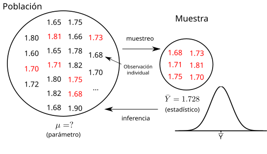
La estadística inferencial permite conocer características (parámetros) de una población a partir de información limitada -muestras- (estimador), ya sea por estimación puntual/IC o por prueba de hipótesis.
Extendemos ahora estos mismos métodos a problemas con dos poblaciones.
| Medida | Parámetro | Estimador |
|---|---|---|
| Dif. medias, pob. independientes | \(\mu_1-\mu_2\) | \(\bar{X}_1 - \bar{X}_2\) |
| Dif. medias, pob. dependientes | \(\mu_d\) | \(\bar{X}_d\) |
| Diferencia de proporciones | \(\pi_1 - \pi_2\) | \(p_1 - p_2\) |
| Cociente de varianzas | \(\sigma_1^2/\sigma_2^2\) | \(s_1^2/s_2^2\) |
Diferencia de medias \(\mu_1 - \mu_2\)
Diferencia de proporciones \(\pi_1 - \pi_2\)
Cociente de varianzas \(\sigma_1^2/\sigma_2^2\)
Por TLC, el estimador de la diferencia sigue una distribución
\[\bar{X}_1 - \bar{X}_2 \sim N \left( \mu_1 - \mu_2, \sqrt{\dfrac{\sigma_1^2}{n_1} + \dfrac{\sigma_2^2}{n_2}}\right)\]
Estandarizando:
\[Z = \dfrac{(\bar{X}_1 - \bar{X}_2) - (\mu_1 - \mu_2)}{\sqrt{\dfrac{\sigma_1^2}{n_1} + \dfrac{\sigma_2^2}{n_2}}} \sim N (0,1)\]
Reemplazando y despejando \(\mu_1-\mu_2\) (la distribución es simétrica):
\[IC_{1-\alpha} = (\bar{X}_1 - \bar{X}_2) \pm Z_{1-\alpha/2} \left(\sqrt{\dfrac{\sigma_1^2}{n_1} + \dfrac{\sigma_2^2}{n_2}} \right)\]
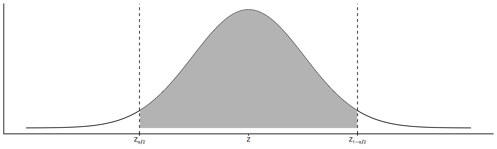
Ejemplo (trigo)
Se desea estimar con 95% de confianza la diferencia del rendimiento medio de 2 variedades de trigo. Se sembraron 10 parcelas de cada una. Se sabe por estudios previos que \(\sigma_1 = 3\) y \(\sigma_2 = 4\) qq/ha.
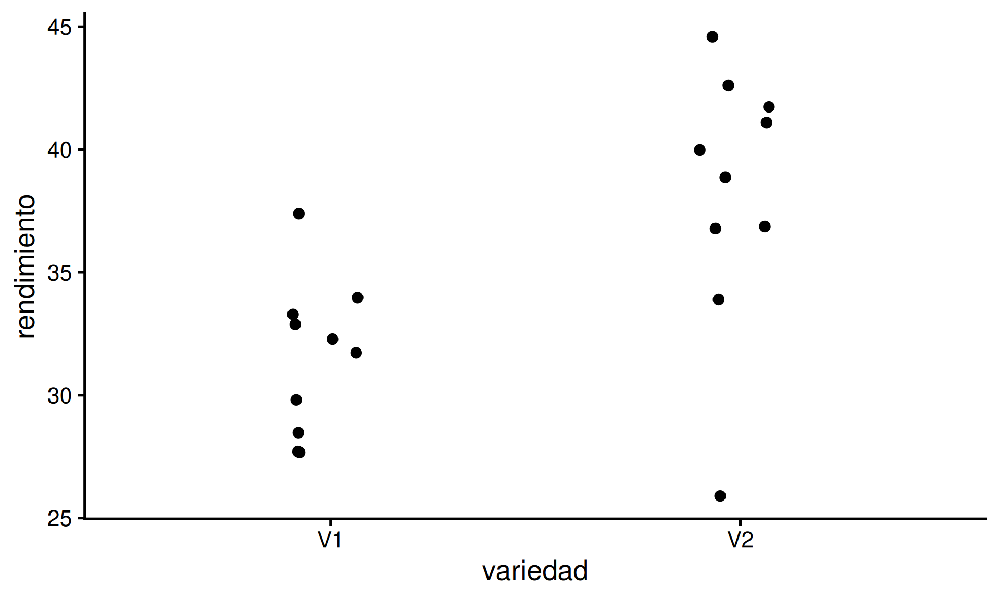
Datos: \(n_1=n_2=10\), \(\bar{X}_1 = 31.53\), \(\bar{X}_2 = 38.24\), \(\sigma_1=3\), \(\sigma_2=4\)
Valor crítico:
Cálculo manual:
\[IC_{0.95} = (31.53 - 38.24) \pm 1.96 \sqrt{\dfrac{3^2}{10}+\dfrac{4^2}{10}} = -6.71 \pm 3.1\]
\[P(-9.81 \leq \mu_1 - \mu_2 \leq -3.61) = 0.95\]
Interpretación: con 95% de confianza, la verdadera diferencia entre los rendimientos medios de las variedades se encuentra entre -9.81 y -3.61 qq/ha.
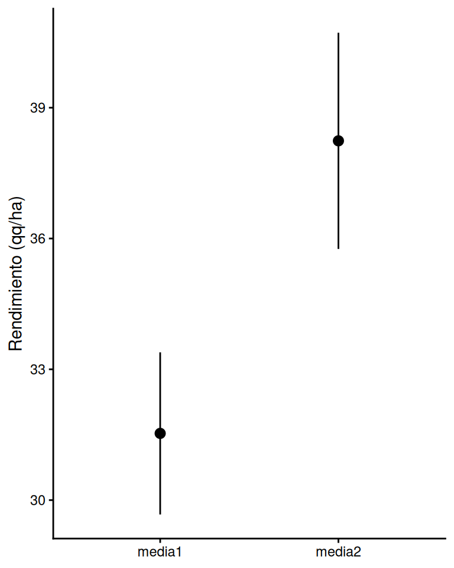
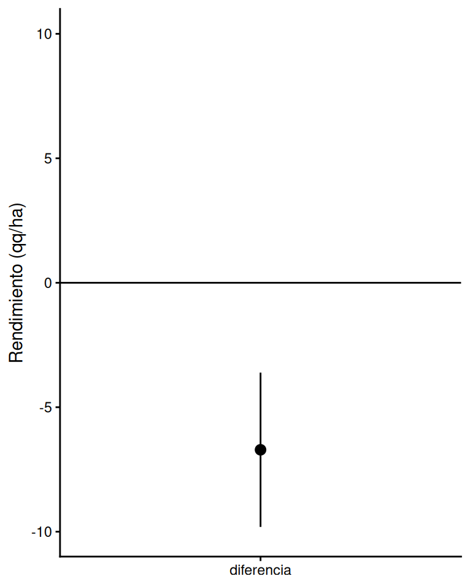
Si asumimos \(\sigma_1^2 = \sigma_2^2 = \sigma^2\) desconocida, se reemplaza por la varianza amalgamada \(s_a^2\): el promedio de varianzas muestrales ponderado por grados de libertad
\[s_a^2 = \dfrac{(n_1 - 1) s^2_1 + (n_2 - 1) s^2_2}{n_1 + n_2 - 2}\]
Estandarizando:
\[t = \dfrac{(\bar{X}_1 - \bar{X}_2) - (\mu_1 - \mu_2)}{\sqrt{s^2_a \left(\dfrac{1}{n_1} + \dfrac{1}{n_2}\right)}} \sim t_{n_1+n_2-2}\]
Despejando:
\[\small IC_{1-\alpha} = (\bar{X}_1 - \bar{X}_2) \pm t_{1-\alpha/2, n_1+n_2-2} \sqrt{s^2_a \left(\dfrac{1}{n_1} + \dfrac{1}{n_2}\right)}\]
Note
La varianza amalgamada le da más peso a la muestra con más grados de libertad, pero incluye información de ambas
Ejemplo (trigo)
Siguiendo el ejemplo del trigo, si no se conocieran los desvíos poblacionales pero se asumen varianzas homogéneas.
Datos: \(\bar{X}_1=31.53\), \(\bar{X}_2=38.24\), \(s^2_1=9.74\), \(s^2_2=28.68\)
\[s_a^2 = \dfrac{9(9.74)+9(28.68)}{18} = 19.21\]
Cálculo manual:
\[IC_{0.95} = (31.53-38.24) \pm 2.10 \sqrt{19.21\left(\dfrac{1}{10}+\dfrac{1}{10}\right)} = -6.71 \pm 4.12\]
\[P(-10.83 \leq \mu_1 - \mu_2 \leq -2.59) = 0.95\]
Interpretación: el IC es algo más amplio que cuando se conocían los desvíos poblacionales, reflejando la incertidumbre extra de estimar la varianza.
Se reemplaza \(\sigma^2_1\), \(\sigma^2_2\) por \(s^2_1\), \(s^2_2\):
\[t = \dfrac{(\bar{X}_1 - \bar{X}_2) - (\mu_1 - \mu_2)}{\sqrt{\dfrac{s^2_1}{n_1} + \dfrac{s^2_2}{n_2}}} \sim t_\delta\]
¿Qué grados de libertad usar? Se aproximan por Welch-Satterthwaite:
\[\delta = \dfrac{\left(\dfrac{s^2_1}{n_1} + \dfrac{s^2_2}{n_2}\right)^2}{\left(\dfrac{s^2_1}{n_1}\right)^2 \dfrac{1}{n_1-1} + \left(\dfrac{s^2_2}{n_2}\right)^2 \dfrac{1}{n_2-1}}\]
Se reemplaza y despeja igual que antes:
\[\small IC_{1-\alpha} = (\bar{X}_1 - \bar{X}_2) \pm t_{1-\alpha/2, \delta} \sqrt{\dfrac{s^2_1}{n_1} + \dfrac{s^2_2}{n_2}}\]
Note
No hay una única varianza en el denominador, por eso \(\delta\) ya no es simplemente \(n_1+n_2-2\)
Ejemplo (trigo)
Siguiendo el ejemplo de trigo, sin asumir igualdad de varianzas.
Datos: \(s^2_1=9.74\), \(s^2_2=28.68\)
\[\delta = 14.5\]
Cálculo manual:
\[IC_{0.95} = (31.53-38.24) \pm 2.14 \sqrt{\dfrac{9.74}{10}+\dfrac{28.68}{10}} = -6.71 \pm 4.19\]
\[P(-10.9 \leq \mu_1 - \mu_2 \leq -2.52) = 0.95\]
Ejemplo (trigo, cont.)
En R, con la función lista:
Welch Two Sample t-test
data: rendimiento by variedad
t = -3.4231, df = 14.483, p-value = 0.003945
alternative hypothesis: true difference in means between group V1 and group V2 is not equal to 0
95 percent confidence interval:
-10.901163 -2.518837
sample estimates:
mean in group V1 mean in group V2
31.53 38.24 Interpretación: con 95% de confianza, la verdadera diferencia está en el IC reportado por t.test(), consistente con el cálculo manual.
Si \(X_1\) y \(X_2\) son dependientes (correlacionadas), las diferencias de a pares \(X_d = X_{1i}-X_{2i}\) tienen distribución
\[X_d \sim N(\mu_d, \sigma^2_d)\]
Estandarizando:
\[t = \dfrac{\bar{X}_d - \mu_d}{s_d/\sqrt{n_d}} \sim t_{n_d-1}\]
\[IC_{1-\alpha} = \bar{X}_d \pm t_{1-\alpha/2, n_d-1} \dfrac{s_d}{\sqrt{n_d}}\]
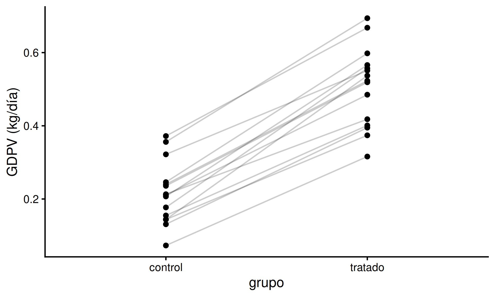
Ejemplo (nutrición)
En un ensayo de nutrición se evaluó el efecto de un suplemento en la ganancia de peso de terneros. Se eligieron 15 pares de terneros idénticos (gemelos): a uno se le dio dieta estándar y al otro el suplemento.
Datos: \(n_d = 15\), \(\bar{X}_d = 0.292\), \(s_d = 0.059\)
Cálculo manual:
\[IC_{0.95} = 0.292 \pm 2.14 \times \dfrac{0.059}{\sqrt{15}} = 0.292 \pm 0.033\]
\[P(0.26 \leq \mu_d \leq 0.32) = 0.95\]
Ejemplo (nutrición, cont.)
En R, con la función lista (paired = TRUE):
Paired t-test
data: trat_i and control_i
t = 19.029, df = 14, p-value = 2.108e-11
alternative hypothesis: true mean difference is not equal to 0
95 percent confidence interval:
0.2587933 0.3245401
sample estimates:
mean difference
0.2916667 Interpretación: con 95% de confianza, la verdadera diferencia entre dietas está entre 0.26 y 0.32 g/animal/día.
Por aproximación binomial:
\[p_1 - p_2 \sim N\left(\pi_1 - \pi_2, \dfrac{\bar{p}\bar{q}}{n_1} + \dfrac{\bar{p}\bar{q}}{n_2}\right)\]
donde \(\bar{p} = \dfrac{n_1p_1 + n_2p_2}{n_1 + n_2}\), \(\bar{q} = 1-\bar{p}\)
Estandarizando:
\[Z = \dfrac{(p_1 - p_2) - (\pi_1 - \pi_2)}{\sqrt{\dfrac{\bar{p}\bar{q}}{n_1} + \dfrac{\bar{p}\bar{q}}{n_2}}} \sim N(0, 1)\]
\[IC_{1-\alpha} = (p_1-p_2) \pm Z_{1-\alpha/2}\sqrt{\dfrac{\bar{p}\bar{q}}{n_1} + \dfrac{\bar{p}\bar{q}}{n_2}}\]
El resto del procedimiento es análogo al de \(\mu_1-\mu_2\) con desvíos conocidos
Ejemplo (siembra directa)
Se estudió el porcentaje de adopción de siembra directa en los departamentos Las Colonias y Castellanos: se encuestaron 120 y 150 productores, de los cuales 112 y 135 respectivamente trabajan en siembra directa.
Datos: \(x_1=112,n_1=120\), \(x_2=135,n_2=150\)
\[p_1 = 0.933 \quad p_2 = 0.9\] \[\bar{p} = \dfrac{112+135}{120+150} = 0.915\]
Cálculo manual:
\[IC_{0.95} = (0.933-0.9) \pm 1.96\sqrt{0.915\times0.085\left(\dfrac{1}{120}+\dfrac{1}{150}\right)} = 0.033 \pm 0.067\]
\[P(-0.03 \leq \pi_1 - \pi_2 \leq 0.1) = 0.95\]
Interpretación: con 95% de confianza, la verdadera diferencia de adopción entre departamentos está entre -0.03 y 0.1.
Cada varianza muestral, estandarizada, sigue una \(\chi^2\):
\[\dfrac{(n_1-1)s^2_1}{\sigma^2_1} \sim \chi^2_{n_1-1} \qquad \dfrac{(n_2-1)s^2_2}{\sigma^2_2} \sim \chi^2_{n_2-1}\]
El cociente de dos \(\chi^2\) (cada una dividida por sus g.l.) sigue una distribución \(F\) \[F = \dfrac{s^2_1/\sigma^2_1}{s^2_2/\sigma^2_2} \sim F_{n_1-1, n_2-1}\]
Despejando \(\sigma^2_1/\sigma^2_2\):
\[\small IC_{1-\alpha} = \left[ \dfrac{s^2_1}{s^2_2} F_{\alpha/2, n_1-1, n_2-1} \;;\; \dfrac{s^2_1}{s^2_2} F_{1-\alpha/2, n_1-1, n_2-1} \right]\]
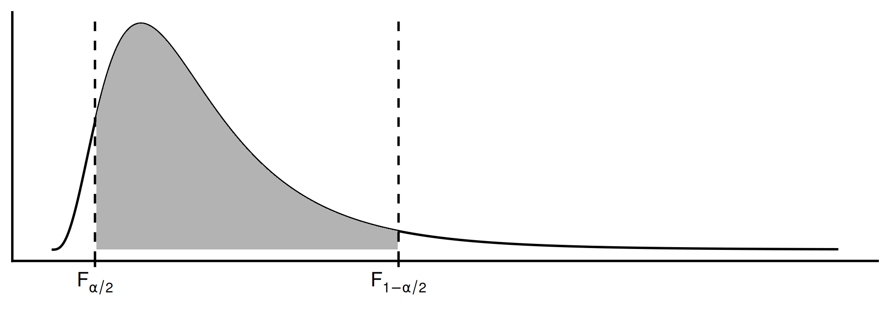
Asociada al cociente de dos variables \(\chi^2\) (varianzas)
\[F = \dfrac{\chi^2_1/\nu_1}{\chi^2_2/\nu_2}\]
Propiedades
df(), pf(), qf() con argumentos df1/df2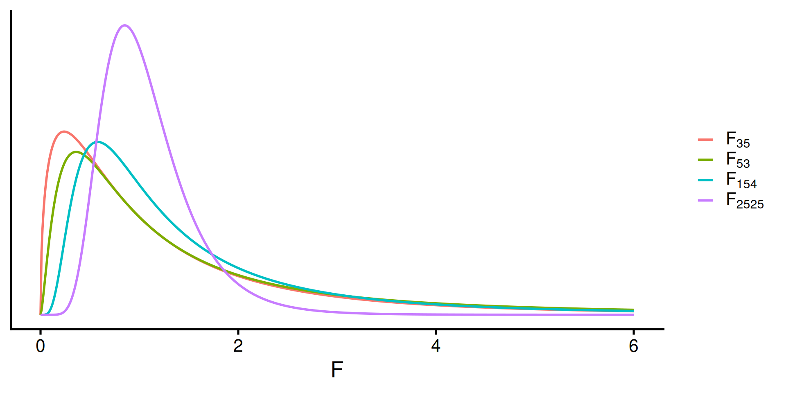
Ejemplo (soja)
Se evaluó la variabilidad de rendimientos de dos variedades de soja, Exp1 y Exp2, sembradas en 10 y 15 lotes respectivamente.
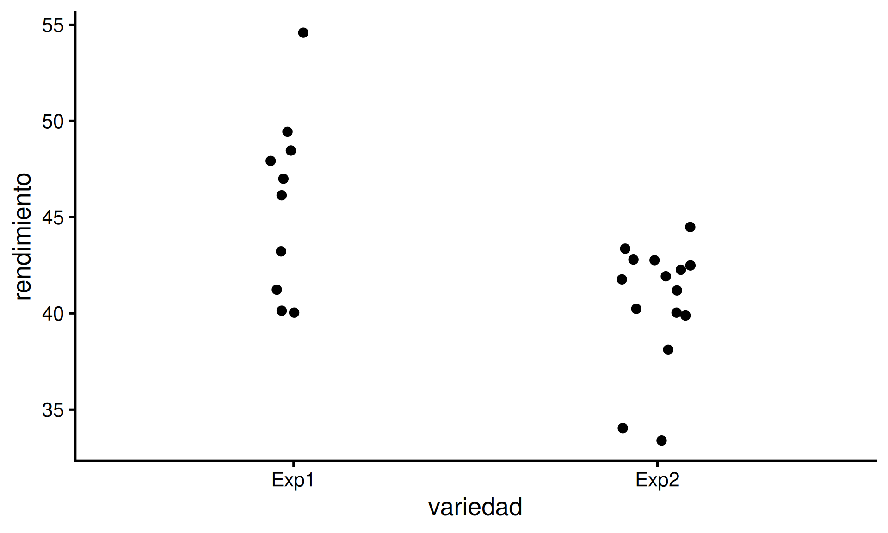
Datos: \(n_1=10,n_2=15\), \(s^2_1=21.96\), \(s^2_2=10.38\), \(\alpha=0.10\)
Valor crítico:
Cálculo manual:
\[IC_{0.90} = \dfrac{21.96}{10.38} \times [0.33 \;;\; 2.65] = [0.7 \;;\; 5.6]\]
Interpretación: con 90% de confianza, el cociente de varianzas de rendimiento está entre 0.7 y 5.6 (qq/ha)². Sacando raíz, \(\sigma_1/\sigma_2 \in [0.84;2.37]\)
Ejemplo (soja, cont.)
En R, con la función lista:
F test to compare two variances
data: rendimiento by variedad
F = 2.1152, num df = 9, denom df = 14, p-value = 0.2019
alternative hypothesis: true ratio of variances is not equal to 1
90 percent confidence interval:
0.7994588 6.3994817
sample estimates:
ratio of variances
2.115201 Dos medias poblacionales \(\mu_1 - \mu_2\)
Varianzas poblacionales \(\sigma^2_1 = \sigma^2_2\)
Proporciones poblacionales \(\pi_1 = \pi_2\)
Hipótesis
\[\small {H_0: \mu_1 - \mu_2 = 0 \; \text{vs} \; H_1: \mu_1 - \mu_2 \ne 0 \\ H_0: \mu_1 - \mu_2 \le 0 \; \text{vs} \; H_1: \mu_1 - \mu_2 > 0 \\ H_0: \mu_1 - \mu_2 \ge 0 \; \text{vs} \; H_1: \mu_1 - \mu_2 < 0}\]
Estadístico de prueba
\[\small{Z = \dfrac{(\bar{X}_1 - \bar{X}_2) - (\mu_1 - \mu_2)}{\sqrt{\dfrac{\sigma^2_1}{n_1} + \dfrac{\sigma^2_2}{n_2}}} \sim N (0,1)}\]
Regla de decisión: rechazar \(H_0\) si…
Ejemplo (trigo)
Se sospecha que la variedad 2 rinde más que la variedad 1
\[H_0: \mu_1 - \mu_2 \ge 0 \quad \text{vs} \quad H_1: \mu_1 - \mu_2 < 0\]
Datos: \(\bar{X}_1=31.53\), \(\bar{X}_2=38.24\), \(\sigma_1=3\), \(\sigma_2=4\), \(n_1=n_2=10\)
\[Z = \dfrac{31.53-38.24}{\sqrt{9/10+16/10}} = -4.24\]
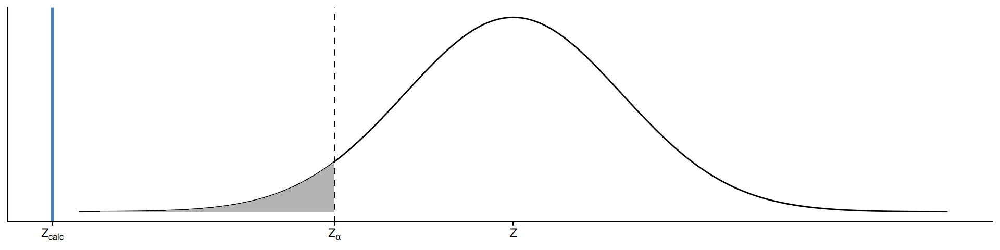
Conclusión: existe evidencia significativa para rechazar \(H_0\) (P < 0.0001); el rendimiento de la variedad 2 es superior.
Estadístico de prueba
\[t = \dfrac{(\bar{X}_1 - \bar{X}_2) - (\mu_1 - \mu_2)}{\sqrt{s^2_a \left(\dfrac{1}{n_1} + \dfrac{1}{n_2}\right)}} \sim t_{n_1+n_2-2}\]
Regla de decisión: rechazar \(H_0\) si…
Ejemplo (trigo)
Ejemplo (trigo, cont.)
En R, con la función lista:
Two Sample t-test
data: rendimiento by variedad
t = -3.4231, df = 18, p-value = 0.001516
alternative hypothesis: true difference in means between group V1 and group V2 is less than 0
95 percent confidence interval:
-Inf -3.310837
sample estimates:
mean in group V1 mean in group V2
31.53 38.24 Conclusión: se rechaza \(H_0\); el rendimiento de la variedad 2 es superior (P = 0.0015).
Estadístico de prueba
\[t = \dfrac{(\bar{X}_1 - \bar{X}_2) - (\mu_1 - \mu_2)}{\sqrt{\dfrac{s_1^2}{n_1} + \dfrac{s^2_2}{n_2}}} \sim t_{\delta}\]
con \(\delta\) aproximado por Welch-Satterthwaite (mismo cálculo que en el IC)
Regla de decisión: rechazar \(H_0\) si…
Ejemplo (trigo, cont.)
En R, con la función lista:
Welch Two Sample t-test
data: rendimiento by variedad
t = -3.4231, df = 14.483, p-value = 0.001973
alternative hypothesis: true difference in means between group V1 and group V2 is less than 0
95 percent confidence interval:
-Inf -3.265542
sample estimates:
mean in group V1 mean in group V2
31.53 38.24 Conclusión: se rechaza \(H_0\); el rendimiento de la variedad 2 es superior (P = 0.0020).
Se trabaja sobre la variable \(X_d = X_1-X_2\)
Hipótesis
\[\small { H_0: \mu_d = 0 \quad \text{vs} \quad H_1: \mu_d \ne 0 \\ H_0: \mu_d \ge 0 \quad \text{vs} \quad H_1: \mu_d < 0 \\ H_0: \mu_d \le 0 \quad \text{vs} \quad H_1: \mu_d > 0 }\]
Estadístico de prueba
\[t = \dfrac{\bar{X}_d - \mu_d}{s_d/\sqrt{n_d}} \sim t_{n_d-1}\]
Regla de decisión: rechazar \(H_0\) si…
Ejemplo (nutrición)
Retomando el ensayo de nutrición: ¿hay diferencia entre las dietas?
\[H_0: \mu_d = 0 \quad \text{vs} \quad H_1: \mu_d \ne 0\]
Datos: \(\bar{X}_d=0.292\), \(s_d=0.059\), \(n_d=15\)
\[\small t = \dfrac{0.292}{0.059/\sqrt{15}} = 19.17\]
Conclusión: como \(t = 19.17 \ge 2.14\), se rechaza \(H_0\); las dietas no producen el mismo aumento de peso.
Ejemplo (nutrición, cont.)
En R, con la función lista (paired = TRUE):
Paired t-test
data: trat_i and control_i
t = 19.029, df = 14, p-value = 2.108e-11
alternative hypothesis: true mean difference is not equal to 0
95 percent confidence interval:
0.2587933 0.3245401
sample estimates:
mean difference
0.2916667 Conclusión: se rechaza \(H_0\) (P < 0.0001); las dietas no producen el mismo aumento de peso.
Hipótesis
\[\small{H_0: \pi_1 - \pi_2 = 0 \quad \text{vs} \quad H_1: \pi_1 - \pi_2 \ne 0 \\ H_0: \pi_1 - \pi_2 \ge 0 \quad \text{vs} \quad H_1: \pi_1 - \pi_2 < 0 \\ H_0: \pi_1 - \pi_2 \le 0 \quad \text{vs} \quad H_1: \pi_1 - \pi_2 > 0}\]
Estadístico de prueba
\[\small{Z = \dfrac{(p_1 - p_2) - 0}{\sqrt{\bar{p}(1-\bar{p}) \left(\dfrac{1}{n_1} + \dfrac{1}{n_2} \right)}} \sim N(0, 1)}\]
donde \(\small{\bar{p} = \dfrac{n_1p_1 + n_2p_2}{n_1 + n_2}}\)
Regla de decisión: igual que test \(Z\)
Ejemplo (siembra directa)
¿Es igual el % de adopción de siembra directa en ambos departamentos?
\[H_0: \pi_1 - \pi_2 = 0 \quad \text{vs} \quad H_1: \pi_1 - \pi_2 \ne 0\]
\[Z = \dfrac{0.933-0.9}{0.034} = 0.97\]
Conclusión: no se rechaza \(H_0\) (P = 0.3296); los % de adopción son estadísticamente iguales.
\[H_0: \sigma^2_1 = \sigma^2_2 \quad \text{vs} \quad H_1: \sigma^2_1 \ne \sigma^2_2\]
El cociente de varianzas muestrales tiene distribución \(F\)
\[\dfrac{s^2_1}{s^2_2} \sim F_{n_1-1, n_2-1}\]
Regla de decisión: rechazar \(H_0\) si…
Note
Pro tip: en bilaterales, poner la mayor varianza en el numerador — así \(F>1\) y se aplica la regla unilateral derecha
Ejemplo (insectos)
¿Es más variable el peso de los machos que el de las hembras en una especie de insectos? (15 individuos por sexo)
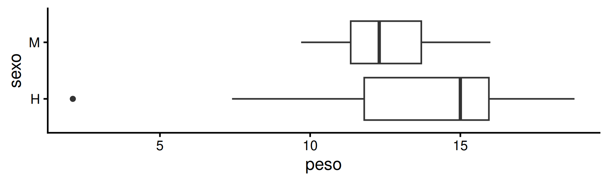
Datos: \(s^2_H = 19.13\), \(s^2_M = 4\)
\[F = \dfrac{19.13}{4} = 4.78\]
Conclusión: como \(F = 4.78 \ge 2.98\), se rechaza \(H_0\); la variación de pesos no es similar entre sexos.
Ejemplo (insectos, cont.)
En R, con la función lista:
F test to compare two variances
data: peso by sexo
F = 4.7768, num df = 14, denom df = 14, p-value = 0.006014
alternative hypothesis: true ratio of variances is not equal to 1
95 percent confidence interval:
1.603721 14.228188
sample estimates:
ratio of variances
4.776824 Conclusión: se rechaza \(H_0\) (P = 0.006); la variación de pesos no es similar entre sexos.